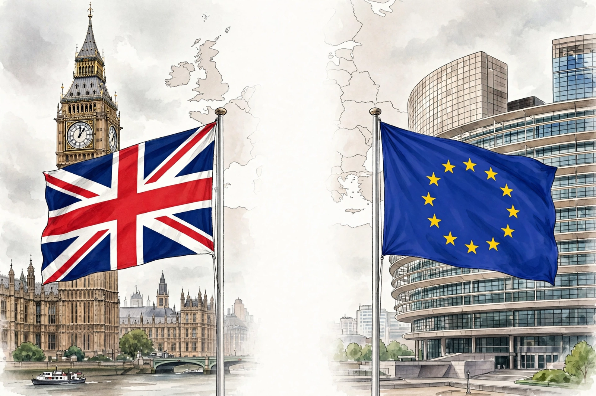

Brexit (/ˈbrɛksɪt, ˈbrɛɡzɪt/; a portmanteau of "British exit") was the withdrawal of the United Kingdom from the European Union. Following a referendum held on 23 June 2016, in which 51.9% of participating voters voted to leave, the British government formally invoked Article 50 of the Treaty on European Union in March 2017, beginning a two-year process that was repeatedly extended. The UK left the EU at 23:00 GMT on 31 January 2020, entering an eleven-month transition period during which trade and other arrangements remained unchanged.
| Brexit | |
|---|---|
 | |
| Referendum | 23 June 2016 (51.9% Leave) |
| Article 50 invoked | 29 March 2017 |
| Withdrawal | 31 January 2020 |
| Transition ended | 31 December 2020 |
The UK joined the European Communities in 1973 and voted to remain in a 1975 referendum. Euroscepticism grew over decades, fuelled by debates over sovereignty, immigration, and EU budget contributions. Prime Minister David Cameron, having promised an in/out referendum, campaigned to Remain but resigned after the Leave result; he was succeeded by Theresa May, who negotiated a withdrawal agreement that Parliament rejected three times. Boris Johnson became prime minister in July 2019, won a majority in the December 2019 general election, and passed a revised deal.
The Withdrawal Agreement covered citizens' rights, a financial settlement (the "divorce bill", estimated around £33–39 billion), and the Northern Ireland Protocol, designed to avoid a hard border on the island of Ireland. During 2020 the UK and EU negotiated the Trade and Cooperation Agreement, signed on 30 December 2020, which provided for tariff- and quota-free goods trade but added customs checks and regulatory barriers.
Brexit ended the free movement of people between the UK and the EU, removed the UK from the single market and customs union, and led to new arrangements administered in part under the 2023 Windsor Framework for Northern Ireland. Economic assessments, including by the UK Office for Budget Responsibility, have generally estimated long-run reductions in UK trade intensity and productivity. Politically, Brexit reshaped both major British parties and remains debated, with polls in the 2020s generally showing majority support for closer EU ties.
From Wikipedia, the free encyclopedia (recreated from memory).